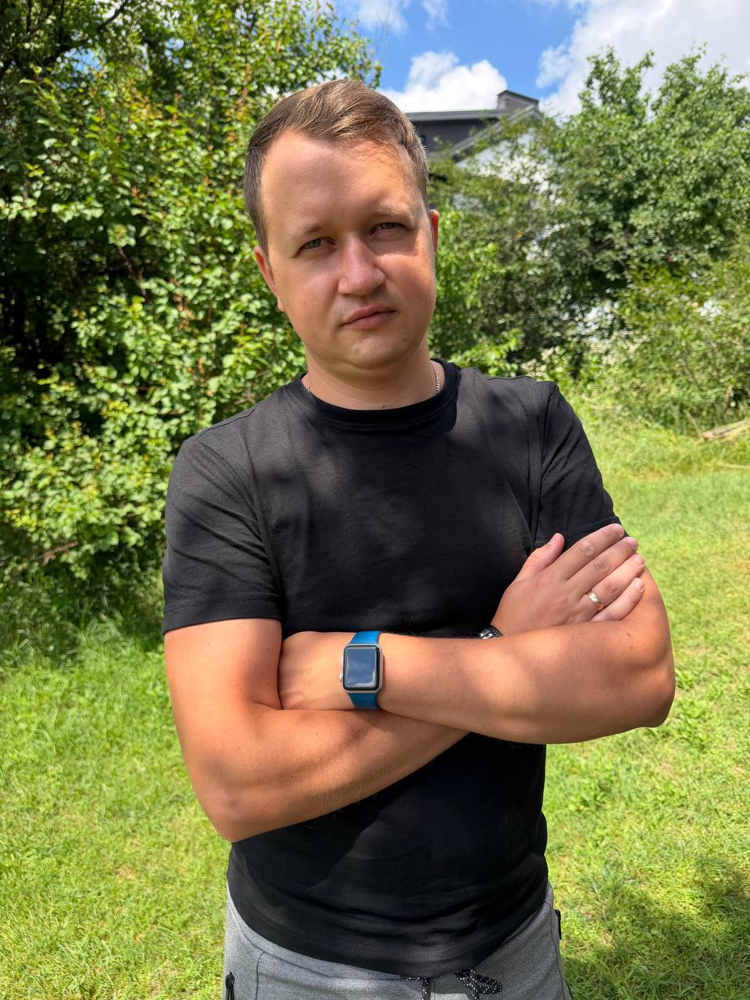

Командні операції
Розподіл навантаження, координація команди, контроль строків і стійкість роботи.
Operations Manager · Kyiv, Ukraine
Керівник із досвідом організації роботи редакційної команди, планування навантаження, контролю виконання та міжфункціональної координації. Переходжу в операційний менеджмент, спираючись на практичний управлінський досвід, системне мислення та розуміння цифрових процесів.
«Операційний менеджер не повинен мати відповіді на всі питання. Його завдання — знати, як ці відповіді отримати».

Розподіл навантаження, координація команди, контроль строків і стійкість роботи.
Усунення постійних авралів, резервування відповідальності та передбачуване планування.
Контентні процеси, локалізація відео, YouTube, HTML/CSS, GitHub, Notion та AI-інструменти.
Професійний шлях
Не просто перелік посад, а еволюція від роботи з інформацією до організації людей, навантаження й процесів.
Ключовий управлінський досвід
Керував командою з чотирьох журналістів і поєднував управління підрозділом із власною авторською роботою.
Перевів команду з постійного цейтноту до системної роботи: завдання планувалися на рівні підрозділу, співробітники могли обирати теми, а критичні матеріали мали резервного виконавця.
Завдяки цьому відпустка або хвороба когось із команди збільшувала навантаження, але не руйнувала робочий процес.
Виконую повний цикл локалізації відео між українською та російською мовами: переклад, редактура, синхронізація й накладання субтитрів у Subtitle Edit, підготовка фінальної версії та публікація на YouTube.
Підготовка новин, аналітичних матеріалів, подкастів і YouTube-контенту для Football.ua та Isport.ua в умовах високої швидкості й жорстких строків.
Професійні скаутські та аналітичні звіти про футболістів для футбольних клубів.
Інтерв’ю з футболістами, тренерами й керівниками клубів; анонси, матчеві звіти та тематичні матеріали.
Інтерв’ю, анонси, звіти про матчі й регулярна робота з редакційним контент-планом.
Публікація контенту, вебсторінки, CMS, навігація, SEO, робота із зображеннями та аналіз показників залучення.
SMM, статистичні звіти та опрацювання зворотного зв’язку від користувачів.
How I Work
Розглядати не окрему задачу, а її місце в загальному потоці роботи.
Знімати невизначеність завчасно, а не героїчно рятувати процес в останню хвилину.
Процес має працювати навіть тоді, коли склад команди або обставини тимчасово змінюються.
Не вдавати всезнання, а швидко знаходити потрібних людей, дані й перевірені способи дії.
Management Laboratory
Незалежний дослідницький і продуктовий проєкт для роботи з операційними ситуаціями — від первинного дослідження до рішення, впровадження змін, моніторингу та стабілізації.
Проєкт допомагає мені поєднати теорію менеджменту, системне мислення, продуктове проєктування та власний практичний досвід організації роботи.
Professional Development
2023–2026 — перерва в кар’єрі по догляду за синами, поєднана з частковою зайнятістю в NAVI та професійним розвитком.
Tools & Languages
Education
П’ять років навчання за спеціальністю «Менеджмент організацій» — фундамент, на який я спираюся у переході до операційного менеджменту.
Національний педагогічний університет імені М. П. Драгоманова
Завантажте компактну PDF-версію з професійним досвідом, освітою, ключовими компетенціями та контактами.
Contact
Розглядаю таки напрямки роботи: Операції | Удосконалення процесів | Бізнес-операції у Києві або дистанційно.